|
3-4-2-1
|
Jordan | 1 | - | 3 | Argentina |
4-4-2
|
| HT 0-2 | ||||||
|
FIFA World CupSunday 28 June 2026
|
||||||
- Venue
- Dallas Stadium
- Attendance
- 70,649
- Referee
- István Kovács
Yellow card17'
Mohannad Abu Taha
- 2
Substitution46'
Odeh Fakhoury
Mahmoud Al Mardi
Ali Azaizeh
Mousa Al Tamari
Goal55'
Mousa Al Tamari
Assist: Ehsan Haddad
Yellow card64'
Yazan Al Arab
Substitution76'
Nizar Al Rashdan
Amer Jamous
- 2
Substitution90'
Ali Olwan
Mohammad Abu Zraiq
Husam Abu Dahab
Saleem Obaid
Yellow card90+4'
Mohammad Abu Zraiq
Whistle45+6'
45+6'
Goal19'
G. Lo Celso
Penalty scored31'
Lautaro Martínez
- 2
Substitution60'
G. Lo Celso
T. Almada
Lautaro Martínez
L. Messi
Substitution61'
N. Paz
A. Mac Allister
Substitution71'
G. Simeone
V. Barco
Goal80'
L. Messi
Substitution82'
J. Alvarez
J. López
Jordan | |
|---|---|
Goalkeeper | |
| 1 | Yazeed Abulaila |
Defender | |
| 3 | Abdallah Nasib |
| 4 | Husam Abu Dahab 90' |
| 5 | Yazan Al Arab 64' |
Midfielder | |
| 8 | Noor Al Rawabdeh |
| 9 | Ali Olwan 90' |
| 20 | Mohannad Abu Taha 17' |
| 21 | Nizar Al Rashdan 76' |
| 23 | Ehsan Haddad |
| 24 | Ali Azaizeh 46' |
Forward | |
| 11 | Odeh Fakhoury 46' |
Substitutes | |
| 6 | Amer Jamous 76' |
| 7 | Mohammad Abu Zraiq 90'90+4' |
| 10 | Mousa Al Tamari 46'55' |
| 13 | Mahmoud Al Mardi 46' |
| 17 | Saleem Obaid 90' |
Argentina | |
Goalkeeper | |
| 23 | E. Martínez |
Defender | |
| 2 | M. Senesi |
| 3 | N. Tagliafico |
| 14 | E. Palacios |
| 19 | N. Otamendi |
Midfielder | |
| 5 | L. Paredes |
| 11 | G. Lo Celso 19'60' |
| 17 | G. Simeone 71' |
| 18 | N. Paz 61' |
Forward | |
| 9 | J. Alvarez 82' |
| 22 | Lautaro Martínez 31'60' |
Substitutes | |
| 8 | V. Barco 71' |
| 10 | L. Messi 60'80' |
| 16 | T. Almada 60' |
| 20 | A. Mac Allister 61' |
| 21 | J. López 82' |


97'
Argentina have attempted 801 passes in this game, the highest total by any team in a single match in the 2026 FIFA World Cup.
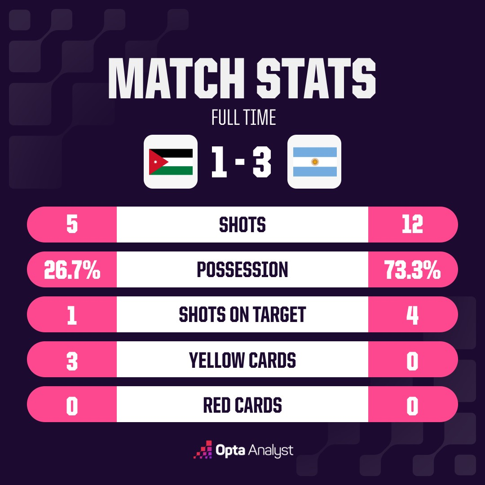
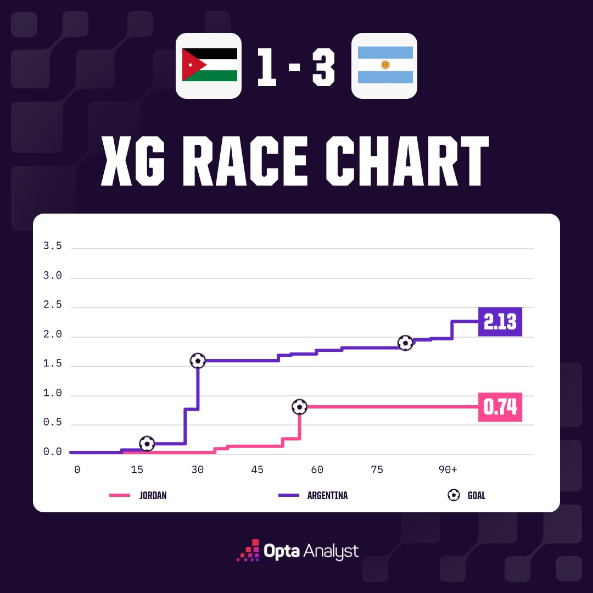
97'
Jordan attempted 5 shots in this game, their lowest total in a single match in the 2026 FIFA World Cup.
97'
Argentina have won their last 3 games in the FIFA World Cup, their last joint longest winning streak was from 26th November 2022 to 3rd December 2022.
97'
Jordan have lost their last 3 games in the FIFA World Cup, their longest losing streak in the competition (since at least 1965/1966).
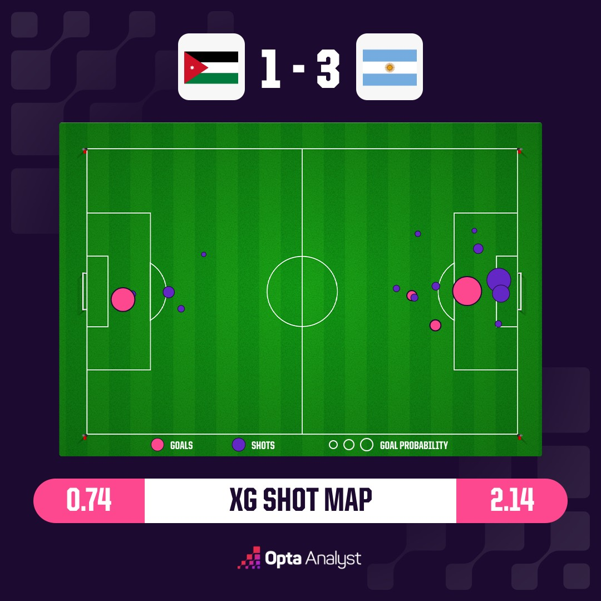
90+6'
IT’S ALL OVER! Argentina have taken the victory, winning 1-3 thanks to goals from Lautaro Martínez, Lionel Messi and Giovani Lo Celso. Argentina can celebrate, but Jordan will have to lick their wounds.
90+5'
Plenty of the ball in the last quarter-of-an-hour of this match for Argentina, but still Jordan stand firm, despite having had only 29.37% of the ball in that period. Can Argentina make their possessional dominance count?
90+5'
The referee goes to their pocket and pulls out a yellow card, which is brandished in the direction of Mohammad Abu Zraiq. Will they be able to avoid a second booking?
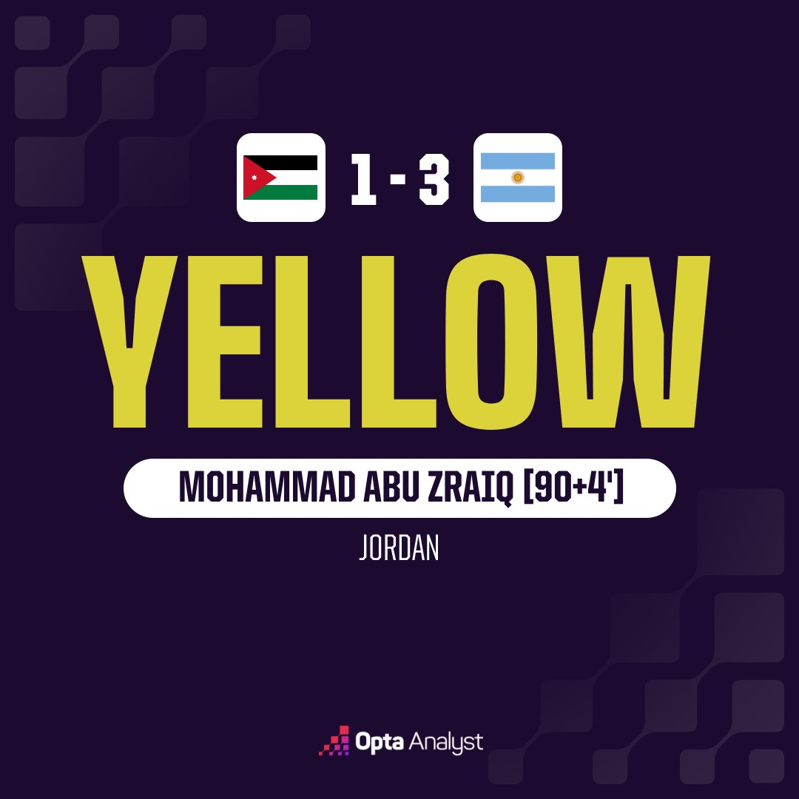
90+4'
Mohammad Abu Zraiq goes in on Alexis Mac Allister and concedes a foul. The free-kick is not in a particularly dangerous area from Jordan’s viewpoint, though.
90+2'
It’s backs to the wall now — Argentina throwing everything into defending their advantage, with a flurry of crucial interventions.
90+1'
An opportunity for Argentina to extend their lead goes begging, as Marcos Senesi is unable to convert from a good opening. Will they live to regret that miss?
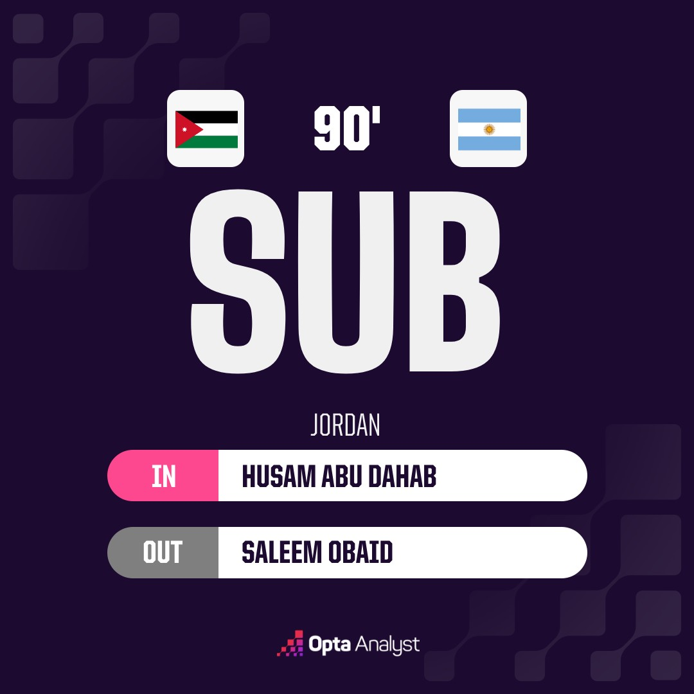
90+1'
Husam Abu Dahab appears to have sustained an injury, and is unable to carry on. They make way for Saleem Obaid.
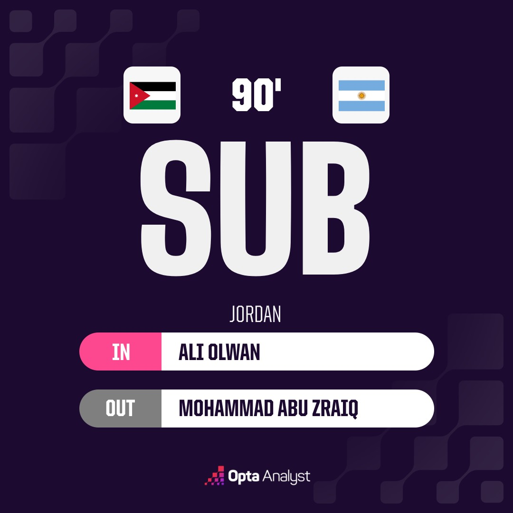
90+1'
A substitution for Jordan sees Ali Olwan replaced by Mohammad Abu Zraiq. There does not appear to be any obvious sign of an injury, so that is a tactical switch.
88'
Good play from Valentín Barco, who draws a foul from Husam Abu Dahab to hand Argentina a free-kick in a dangerous position. Will they create something from this set-piece?
88'
Still behind, but Jordan are refusing to roll over - defensive urgency rising as they fend off more pressure and push for a late turnaround.
87'
Corner after corner for Jordan - Argentina are being forced deeper as the pressure ramps up.
86'
Argentina have attempted the last 5 shots in this game, Jordan last shot was taken by Mousa Al Tamari in the 55th minute.
86'
Argentina win a corner after José López sees a shot diverted wide by Ehsan Haddad. Can Argentina make this opportunity count, or will Jordan defend this?
85'
A free-kick to Argentina, as Ehsan Haddad goes in and fouls Nicolás Tagliafico. However, Jordan will not mind giving one away in this area too much, with plenty of distance to their goal.
85'
It has been 30 minutes since Jordan last attempted a shot in this game.
82'
The Argentina manager is looking to the substitutes’ bench, bringing on José López in place of Julián Alvarez. Will the change make a difference? Let’s find out!
82'
That is a disappointing effort from Thiago Almada, who went for glory but got their attempt wrong, and the shot sailed off target. A frustrating moment for Argentina.
80'
Argentina have scored 3 goals in the FIFA World Cup game for the first time since 17th June 2026 against Algeria (W3-0).
80'
Lionel Messi has scored his 19th goal in the FIFA World Cup.
80'
GOAL! Lionel Messi scores, and Argentina are now well in front – surely they will go on and see this one out now? It seems a long way back for Jordan, with Argentina well in control of this match.
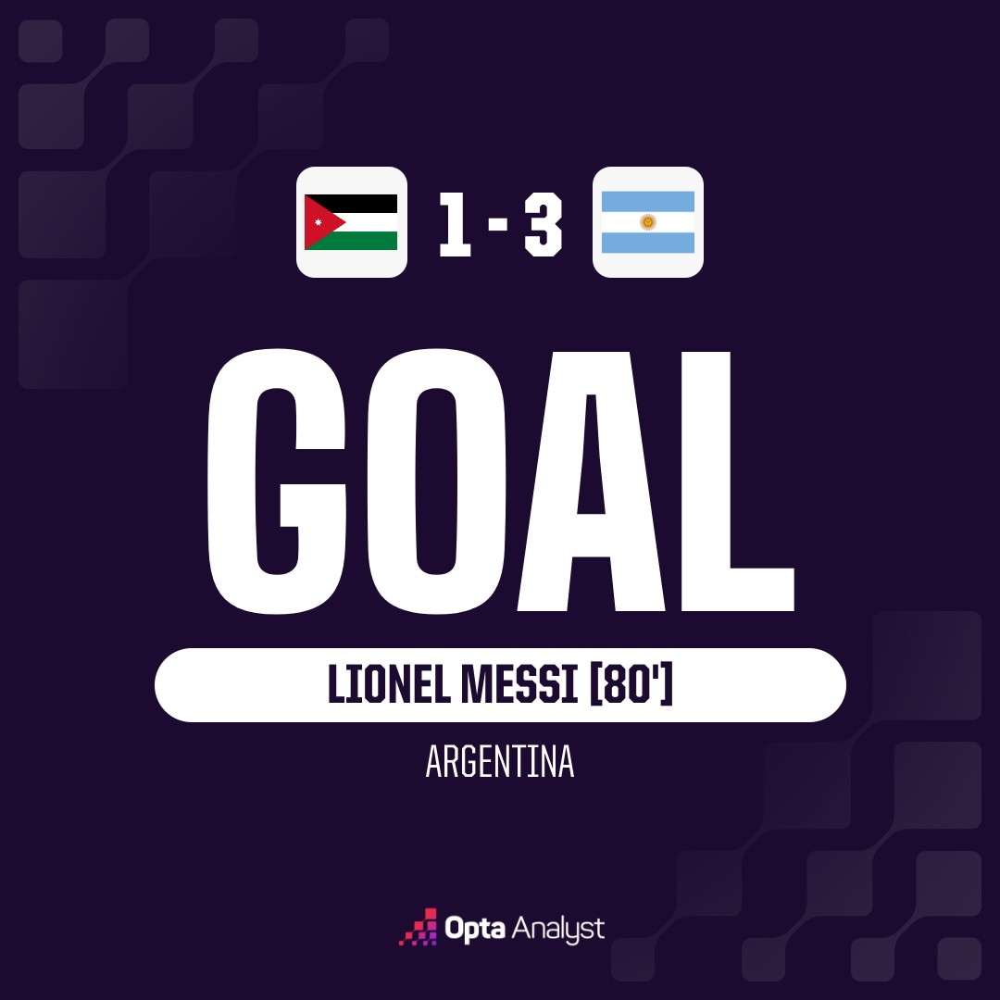
79'
Foul! A free-kick now in a dangerous area for Argentina, after Lionel Messi is fouled by Amer Jamous. Can Argentina make the most of this opportunity?
78'
Argentina are running down the clock expertly here. Another lengthy passing sequence that takes 90 seconds off the clock - every pass is eating up precious time for Jordan.
76'
With 15 minutes of normal time remaining, it is Argentina who have had more of the ball, with 72.63% compared to Jordan’s 27.37%.
76'
A substitution for Jordan sees Nizar Al Rashdan replaced by Amer Jamous. There does not appear to be any obvious sign of an injury, so that is a tactical switch.
75'
Can Jordan make this chance count? They have won a free-kick in a threatening position after a foul from Nicolás Otamendi on Mahmoud Al Mardi. Will Argentina's defence be tested here?
75'
Neither team has had a shot in the past 10 minutes, as this match just enters something of a down period. Argentina have seen more of the ball, with 80 per cent possession, but Jordan are keeping them away from goal. There is still a chance the match will spark into life, though.
71'
Substitution! Valentín Barco replaces Giuliano Simeone for Argentina as the manager shuffles the pack. Can Valentín Barco make an impression as this match continues?
70'
In the last 15 minutes, it is Argentina who have dominated the ball, having seen 87.80% of the possession, yet they have not been able to go and turn that into a goal just yet, with their opponents standing firm.
67'
A free-kick to Argentina, as Mahmoud Al Mardi goes in and fouls Alexis Mac Allister. However, Jordan will not mind giving one away in this area too much, with plenty of distance to their goal.
66'
With 25 minutes left to play, it’s a good chance to check in on the shot count. Argentina have mustered 8 so far, with 3 of those landing on target. On the other hand, Jordan have gotten 5 of their 1 of attempts on target.
65'
No luck! Lionel Messi takes on a shot that, had they got it right, might have been set to test the goalkeeper, but instead it is sent off target and Jordan come away unscathed.
64'
A yellow card for Jordan's Yazan Al Arab. They will have to walk a tightrope for the rest of this match, and Argentina will likely look to target them and draw a second bookable offence.
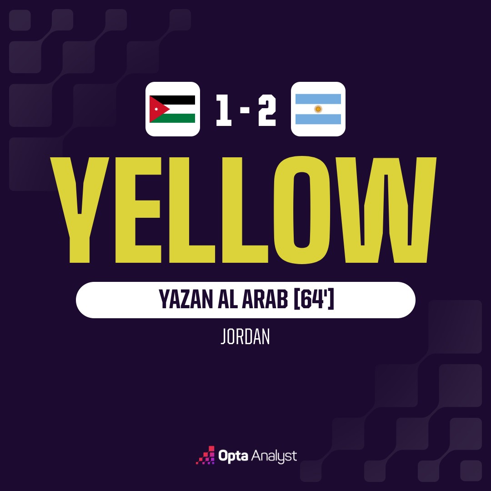
64'
Can Argentina make this chance count? They have won a free-kick in a threatening position after a foul from Yazan Al Arab on Alexis Mac Allister. Will Jordan's defence be tested here?
61'
The Argentina manager is looking to the substitutes’ bench, bringing on Alexis Mac Allister in place of Nico Paz. Will the change make a difference? Let’s find out!
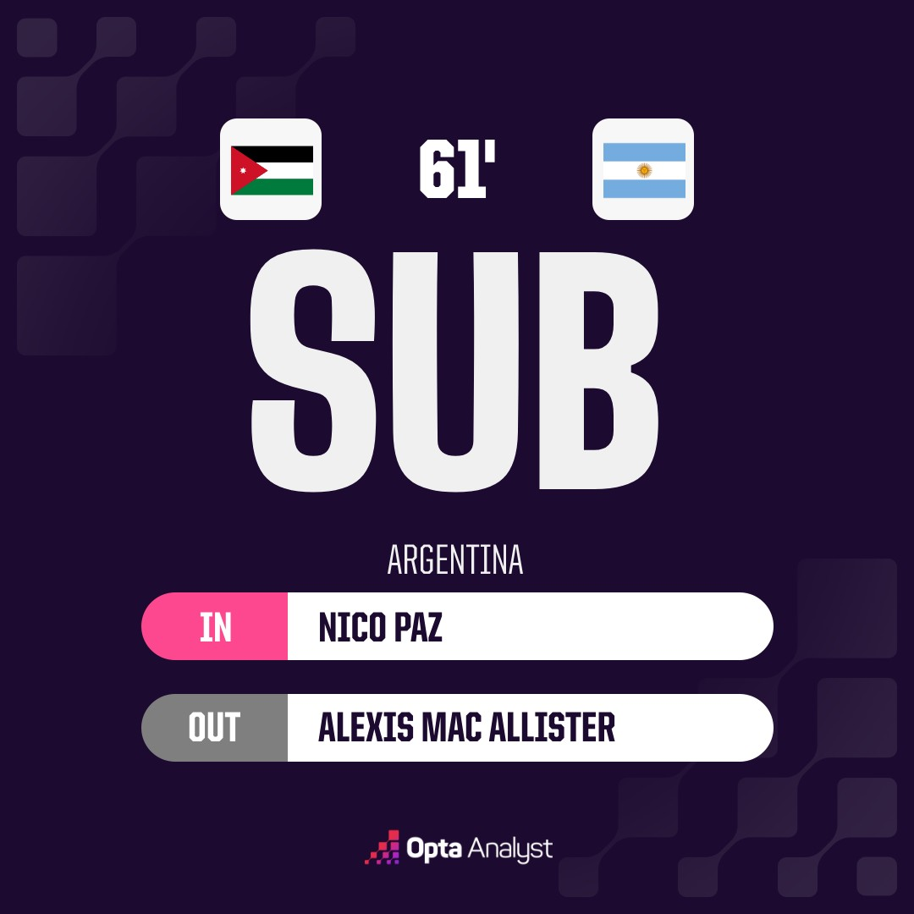
60'
Lionel Messi is making his 29th appearance in the FIFA World Cup.
60'
Argentina are making a tactical change. Lautaro Martínez is leaving the field and in their place comes Lionel Messi – we will soon see if this switch has the desired impact.
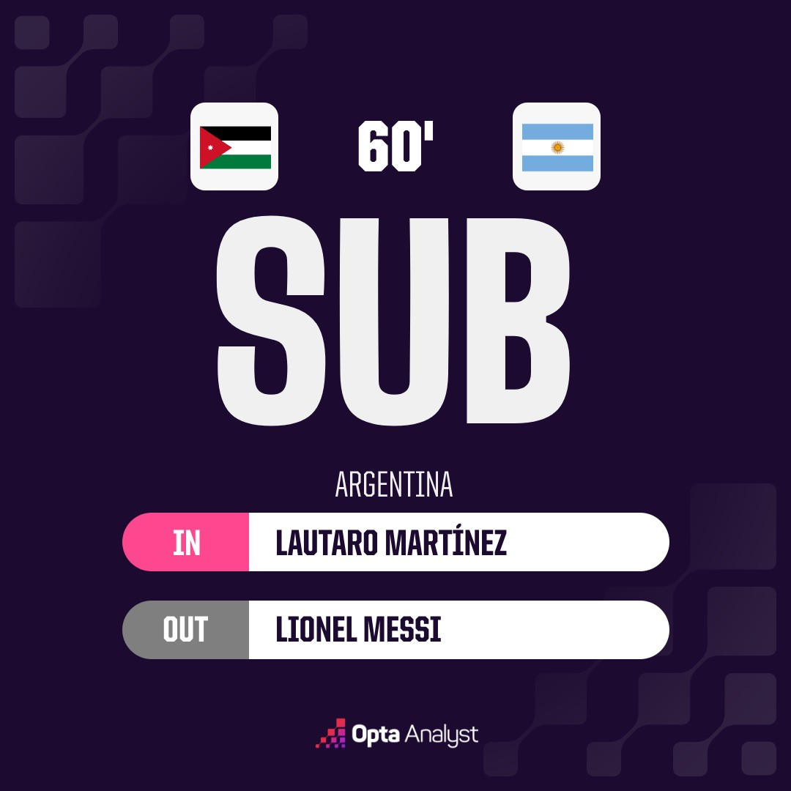
60'
Substitution! Thiago Almada replaces Giovani Lo Celso for Argentina as the manager shuffles the pack. Can Thiago Almada make an impression as this match continues?
59'
MISS! A shot from Nico Paz ends up being off target. They might have done a bit better with that one, but it remains Argentina 2-1 Jordan.
56'
Smart football from Argentina in this second period. They're keeping possession nicely with another patient build-up, content to manage their advantage while staying alert for counter-attacking opportunities.
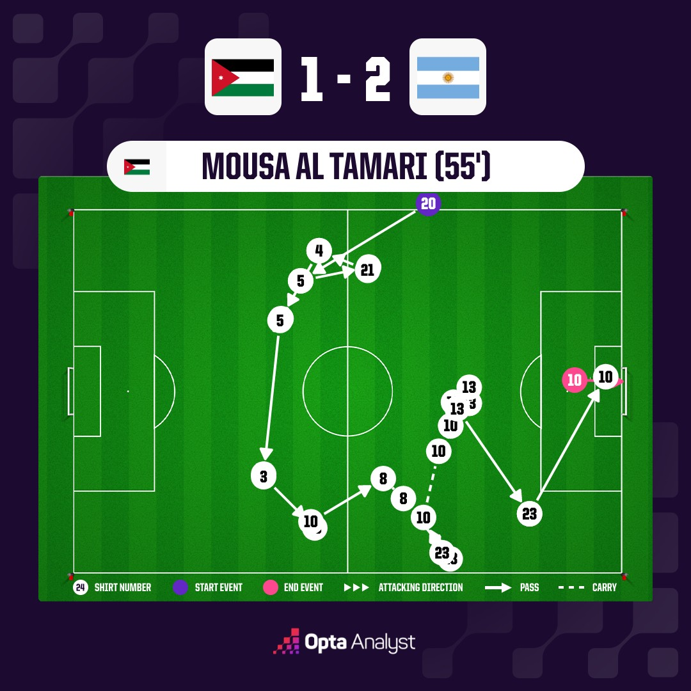
55'
Ehsan Haddad has assisted his first goal in the 2026 FIFA World Cup.
55'
Mousa Al Tamari has scored his first goal in the 2026 FIFA World Cup.
55'
GOAL! It is game well and truly on after Mousa Al Tamari goal cuts Argentina lead down to one. That has given Jordan some hope, but will they be able to go on and level the score?
51'
That is a disappointing effort from Mousa Al Tamari, who went for glory but got their attempt wrong, and the shot sailed off target. A frustrating moment for Jordan.
49'
Free-kick! A foul from Ali Olwan on Nicolás Tagliafico. It is well away from Jordan’s goal, so it is unlikely to result in a chance for Argentina.
49'
A foul from Nicolás Tagliafico on Mousa Al Tamari sees Jordan win a free-kick, but it is not in a dangerous position, so Argentina should be confident they can defend it easily enough.
48'
Lautaro Martínez makes a run in behind but the Jordan defensive line were alert, and stepped up in time to catch them offside. That run just needed to be timed better.
46'
Substitution! Mahmoud Al Mardi replaces Odeh Fakhoury for Jordan as the manager shuffles the pack. Can Mahmoud Al Mardi make an impression as this match continues?
46'
The Jordan manager is looking to the substitutes’ bench, bringing on Mousa Al Tamari in place of Ali Azaizeh. Will the change make a difference? Let’s find out!
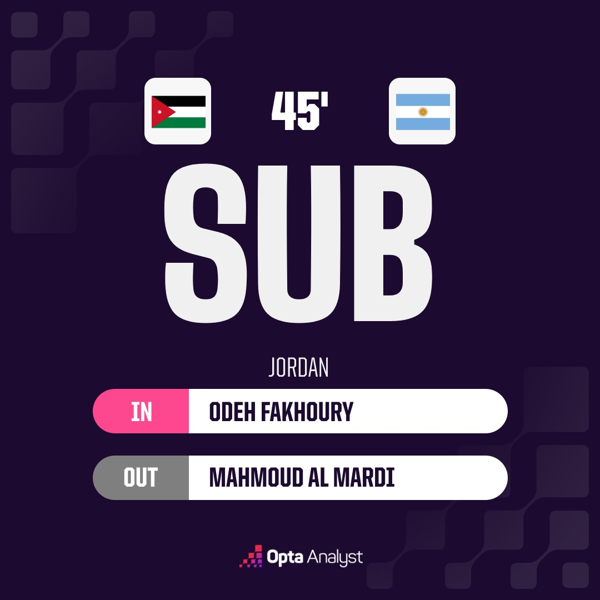
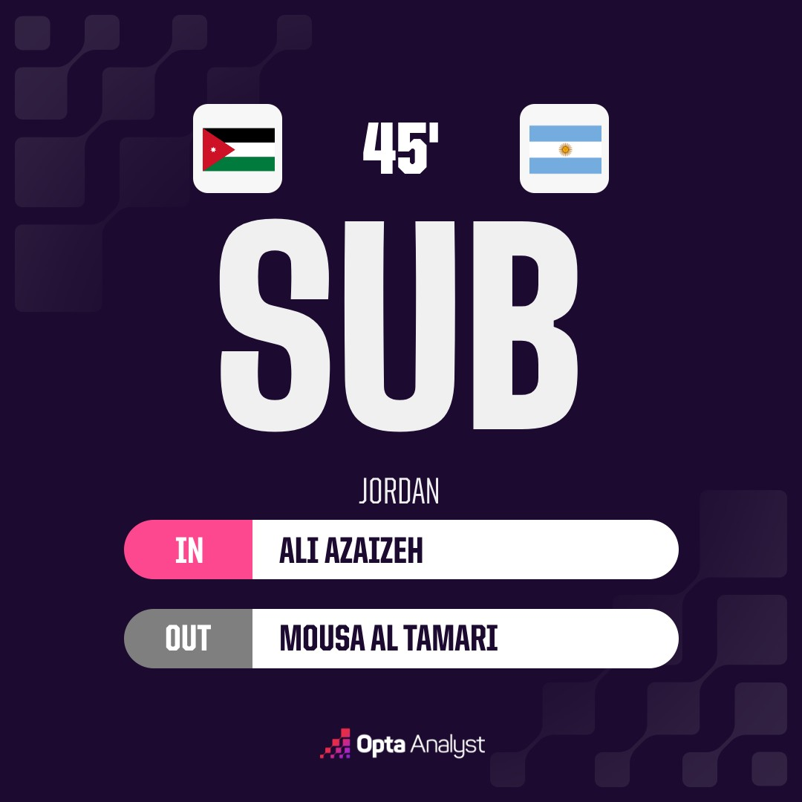
52'
Argentina are unbeaten in their last 6 FIFA World Cup matches when leading at half-time (W4, D2) dating back to 22nd November 2022 against Saudi Arabia (L1-2).
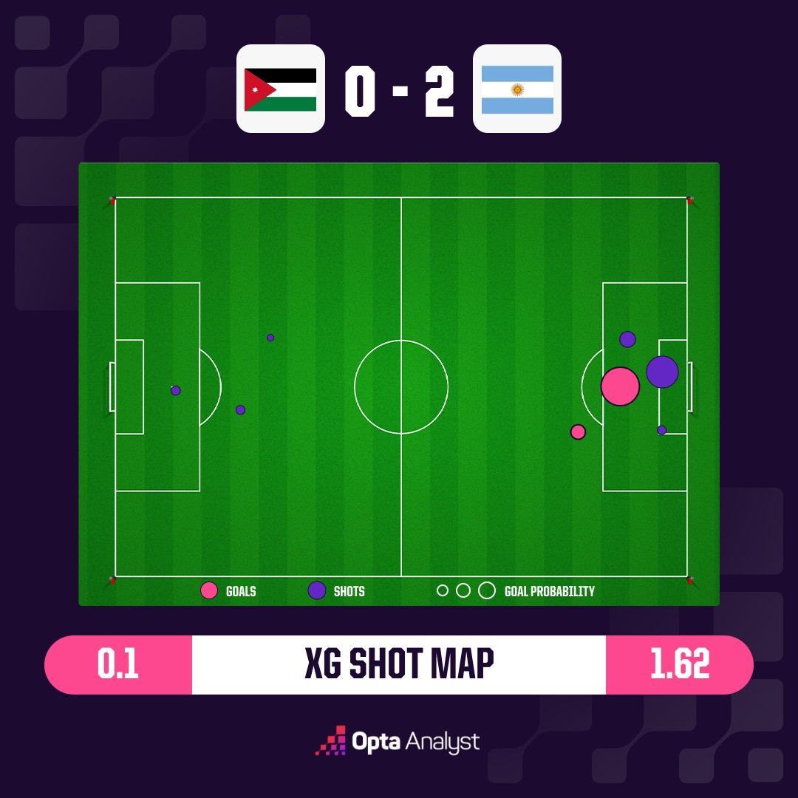
45+6'
The first half comes to a close and it’s Argentina who have the lead over Jordan at Dallas Stadium, with the scoreline 0-2 at the interval. Will Jordan turn this around after the break?
45+5'
The Argentina defence steps up in time and there is a frustration for Odeh Fakhoury, who thought they were through until the flag goes up to signal offside.
45+5'
Chance! A shot from inside the area from Julián Alvarez was heading in, but Yazeed Abulaila makes a fine stop to keep it out. A big save from the Jordan shot-stopper!
45+5'
Argentina have had plenty of the ball in the last 15 minutes, with 69.47% possession compared to just 30.53% for their opponents. However, there’s not been any goal to come from that possessional dominance just yet.
45+3'
Neither team has had a shot in the past 10 minutes, as this match just enters something of a down period. Argentina have seen more of the ball, with 83 per cent possession, but Jordan are keeping them away from goal. There is still a chance the match will spark into life, though.
45+3'
Nicolás Otamendi makes a run in behind but the Jordan defensive line were alert, and stepped up in time to catch them offside. That run just needed to be timed better.
45+3'
A free-kick in a dangerous position now for Argentina, after a foul from Yazan Al Arab on Nico Paz. Can Argentina make Jordan pay for that rashness from Yazan Al Arab?
45+2'
Despite trailing, Jordan are showing real defensive grit, digging in and stopping further damage as they try to build a platform.
45+2'
Free-kick! A foul from Odeh Fakhoury on Marcos Senesi. It is well away from Jordan’s goal, so it is unlikely to result in a chance for Argentina.
45+1'
Plenty of the ball in the last quarter-of-an-hour of this match for Argentina, but Jordan have been able to hold them off with ease, with Argentina having failed to even muster a shot at goal.
42'
A free-kick to Jordan, as Lautaro Martínez goes in and fouls Ali Azaizeh. However, Argentina will not mind giving one away in this area too much, with plenty of distance to their goal.
42'
Despite trailing, Jordan are showing real defensive grit, digging in and stopping further damage as they try to build a platform.
41'
A free-kick to Argentina, as Yazan Al Arab goes in and fouls Exequiel Palacios. However, Jordan will not mind giving one away in this area too much, with plenty of distance to their goal.
41'
Jordan have not had a shot on target so far in this game.
40'
This is a team playing with assurance - Argentina string together a long sequence and look determined to take a lead into the interval.
38'
MISS! The score remains 0-2, with Argentina relieved after Jordan’s Ali Azaizeh goes for goal but sends their attempt off target. Not one to write home about, that one.
37'
Despite trailing, Jordan are showing real defensive grit, digging in and stopping further damage as they try to build a platform.
36'
Excellent defensive work from Argentina; their organization and success in key duels are effectively safeguarding their lead.
35'
BLOCK! An intervention from Lautaro Martínez might have just prevented a goal, with the defending player getting in the way of an attempt from Mohannad Abu Taha. Solid defending there!
35'
That might have been going in! A fantastic block from Marcos Senesi, who gets in the way of a goal-bound effort from Odeh Fakhoury. Would the goalkeeper have been beaten? We will never know.
34'
Jordan are racking up corners and free-kicks - they’re starting to dominate in dangerous areas.
34'
A rash challenge from Nico Paz, who sends Nizar Al Rashdan tumbling, giving Jordan a free-kick. It is not in a threatening position, but it gives them a chance to get back on the ball.
33'
A foul from Exequiel Palacios on Odeh Fakhoury sees Jordan win a free-kick, but it is not in a dangerous position, so Argentina should be confident they can defend it easily enough.
32'
Free-kick! A foul from Giovani Lo Celso on Ali Olwan. It is well away from Argentina’s goal, so it is unlikely to result in a chance for Jordan.
31'
Lautaro Martínez has scored his first goal in the 2026 FIFA World Cup.
31'
PENALTY SCORED! Lautaro Martínez makes no mistake from the spot, calmly putting away their effort to put Argentina ahead. Can Jordan get back into this from here? It’s 2-0.
29'
VAR changes the decision! After a check, the video official believes the referee’s original call was wrong, and so the decision is overturned.
29'
Decision checked. VAR is going to look at this incident again, so this decision may well not stand. Let’s wait and see what the officials do here.
28'
PENALTY! A clumsy moment from Nizar Al Rashdan as they commit a foul in the area and the referee points straight to the spot. What a great chance for Argentina to extend their lead now.
28'
What a chance! That should really have been another goal for Argentina, who would have extended their lead had Lautaro Martínez kept their composure, but instead Jordan survive that opportunity. Can they make their luck count?
19'
Argentina have avoided defeat in their last 8 matches when scoring first in the FIFA World Cup, since a 1-2 loss to Saudi Arabia on 22nd November 2022.
19'
Giovani Lo Celso has scored his first goal in the 2026 FIFA World Cup.
19'
GOAL! Argentina are in front! It is a strike from outside the area that has given them the lead, with Giovani Lo Celso getting the goal. It is far from game over yet, but now Argentina have an advantage that they will try to hold onto.
17'
BOOKING! Yellow card for Mohannad Abu Taha, who is penalised for a foul. The referee waves away their remonstrations, and now they will have to be careful.
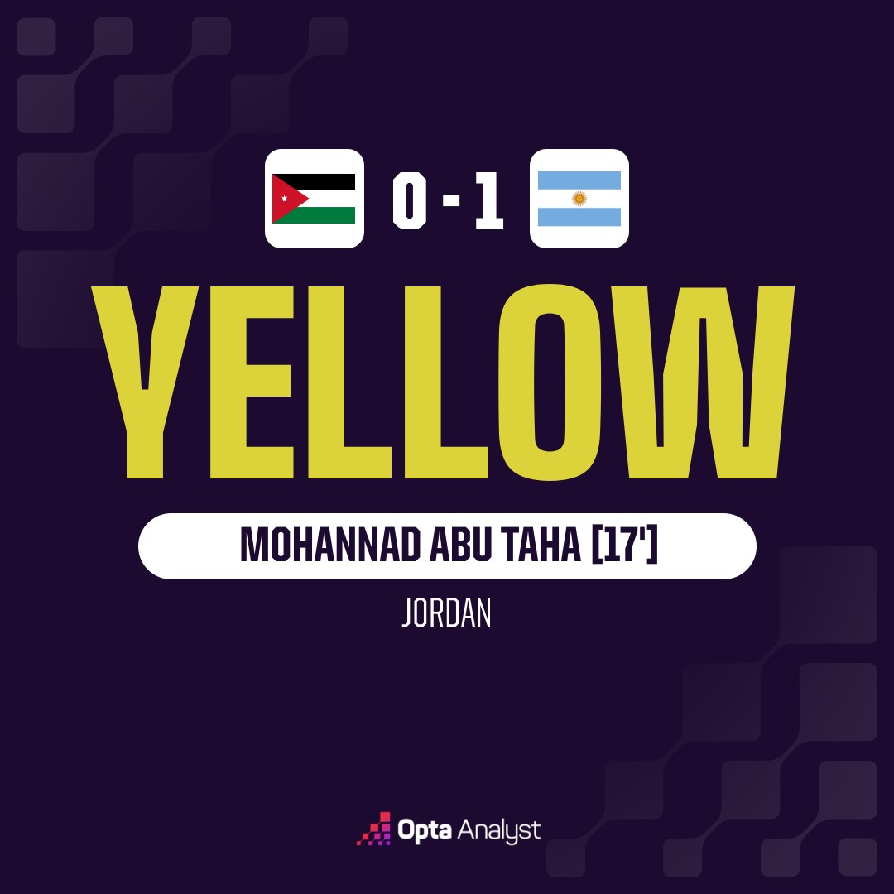
17'
A free-kick in a dangerous position now for Argentina, after a foul from Mohannad Abu Taha on Giovani Lo Celso. Can Argentina make Jordan pay for that rashness from Mohannad Abu Taha?
16'
In the last 15 minutes, it is Argentina who have dominated the ball, having seen 81.04% of the possession, yet they have not been able to go and turn that into a goal just yet, with their opponents standing firm.
13'
MISS! The score remains 0-0, with Jordan relieved after Argentina’s Nicolás Otamendi goes for goal but sends their attempt off target. Not one to write home about, that one.
11'
It’s been tight so far, and Argentina are making sure it stays that way with strong defensive discipline and well-timed clearances.
11'
No goalmouth action for some time now, with neither team having had a shot in the past 10 minutes. Will there be a moment that changes things soon? Argentina have seen plenty of the ball, however, with 83 per cent of the possession in their favour during that period.
7'
No luck – it’s offside! Giovani Lo Celso looked to dart in behind and get on the end of a pass, yet they just went too early, and the flag is up to signal offside.
2'
Argentina enjoying a strong spell early on - their passing rhythm is already clicking as they try to set the tone.
1'
Giuliano Simeone goes in on Ali Olwan and concedes a foul. The free-kick is not in a particularly dangerous area from Argentina’s viewpoint, though.
1'
Up and running! Jordan have kicked off and this FIFA World Cup match is now under way at Dallas Stadium. Let’s hope for an intriguing battle on the pitch.
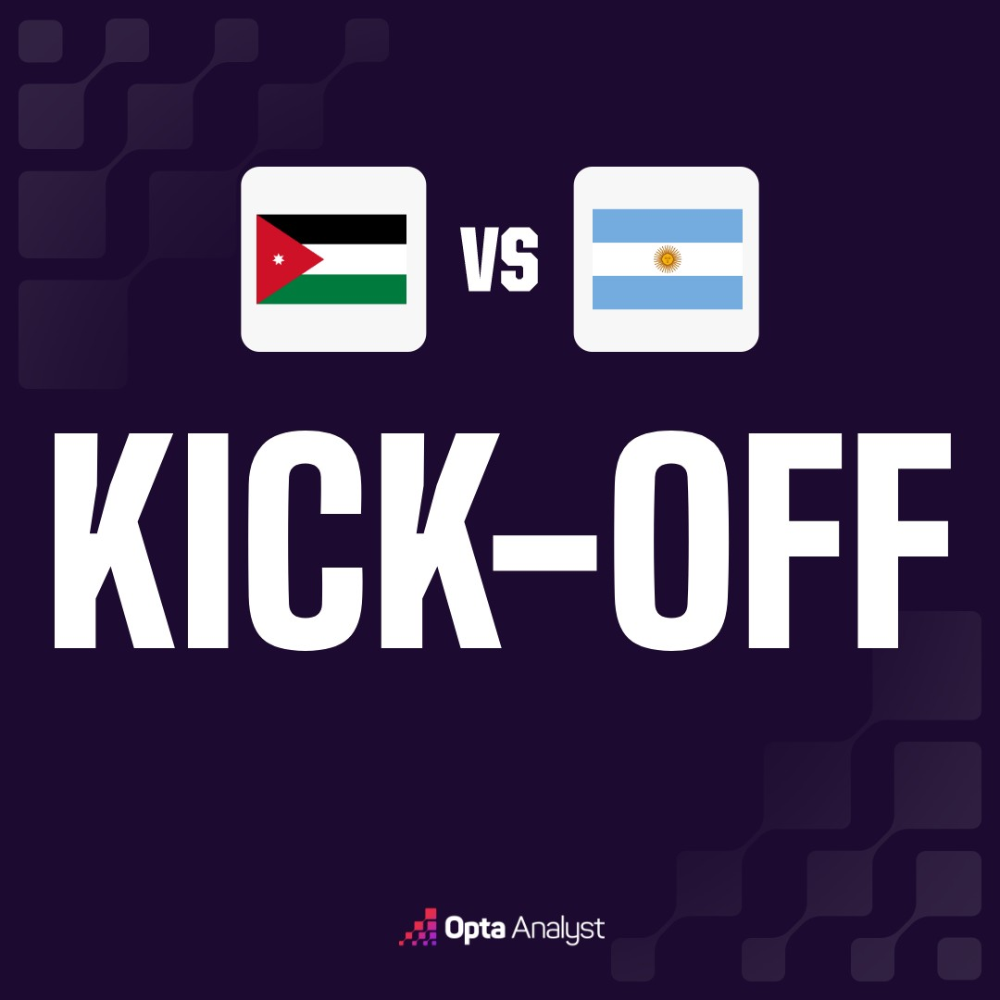
Nicolás Otamendi is making his 17th appearance in the FIFA World Cup.
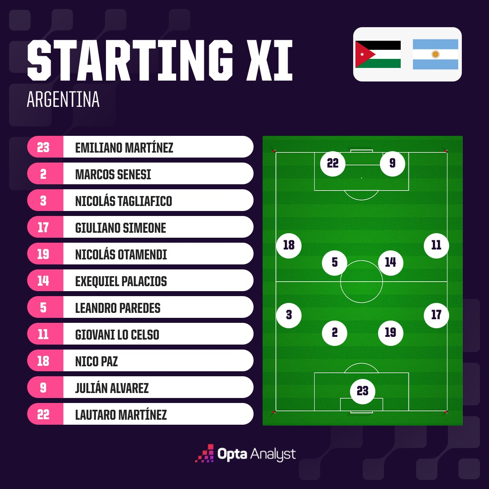
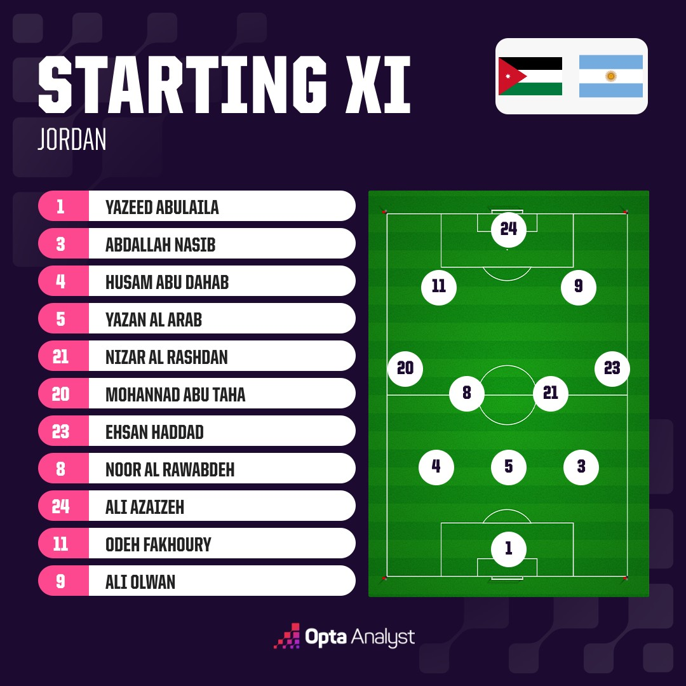
Argentina have outscored their opponents in both halves in each of their last 2 games
Jordan take on Argentina for a FIFA World Cup group stage match at Dallas Stadium on Saturday with Argentina having already clinched a place in the Round of 32.
Jordan's last group stage match saw them beaten 2-1 by Algeria on June 22. Nizar Al Rashdan was on the scoresheet in the loss. They are winless in their last seven games in all competitions.
Argentina's last group stage game saw them triumph 2-0 over Austria on June 22 at Dallas Stadium, their ninth consecutive victory. Lionel Messi was the only player on the scoresheet, netting two goals.
Argentina lead the group on six points, while Jordan's zero points place them fourth. Argentina have clinched a place in the Round of 32, while Jordan are facing elimination.
Austria are second in the group on three points, well-positioned to advance to the Round of 32. Algeria are still in contention for a round of 32 place, sitting third on three points.
Al Rashdan and Ali Olwan have proved attacking threats for Jordan in World Cup play. The pair are the team's joint top scorers with one goal. Al Rashdan has scored the critical first goal of the match once. Argentina have been led by Messi, who has scored on five occasions in this season's World Cup, including two match-opening goals. The striker has found the net more than any other player in the competition.
Argentina have scored in each of their last nine contests in all competitions. They haven't been shut out since a World Cup Qualifiers meeting with Ecuador in September 2025. Argentina have been similarly successful at holding opponents scoreless, as they have shut out the opposition over their last five matches. Mauritania were the last team to score on them in a March friendly.
In their last six matches in all competitions, Jordan have drawn two and lost four. The Jordanian side scored seven and conceded 15 over that period, scoring first in three of the six contests. They had two first-half goals, while their opponents netted seven times in the first 45 minutes. The Argentinian side have won each of their last six. The Argentinian side scored 17 and conceded one in that stretch, netting first in all six. They had eight goals in the first half, while their opponents failed to find the net before the break.
-
General
Possession 26.7% 26.69773.30373.3% Possession lost in defensive half 32 321616 Possession lost in middle third 36 364141 Duels 66 666666 Duels success rate 51.5% 51.51548.48548.5% Aerial duels 5 555 Aerial duels won 40.0% 406060.0% Successful dribbles 9 933 Fouls won 7 71313 Offsides 1 133 Corner awarded 2 266 -
Distribution
Passes 285 285801801 Long passes 36 362525 Long passes proportion (%) 12.6% 12.6323.1213.1% Passing accuracy 80.0% 8092.0192.0% Passes in opponents' half 141 141415415 Passing accuracy in opponents' half (%) 71.6% 71.63188.43488.4% Total passes in the final third 69 69156156 Passing accuracy in final third (%) 63.8% 63.76873.71873.7% Forward passes 187 187446446 Forward passes (%) 65.6% 65.61455.6855.7% Through balls 1 166 Final third entries 36 366060 Penalty area entries 14 141818 Total open play crosses 4 400 Crosses 7 755 Crossing accuracy 28.6% 28.5716060.0% -
Attack
Goals 1 133 Shots 5 51212 Shots on target 1 144 Blocked shots 2 211 Headed shots 1 111 Shots outside the box 3 366 Shots inside the box 2 266 Shots accuracy excluding blocked shots 33.3% 33.33336.36436.4% Shooting accuracy 20.0% 2033.33333.3% Key Passes 3 366 -
Defence
Tackles 16 161414 Tackles success rate 50.0% 5035.71435.7% Clearances 13 1399 Interceptions 19 191212 Recoveries 41 413838 Attacking third recovery 2 233 Defensive third recovery 21 211616 Midfield third recovery 18 181919 Recoveries in attacking half (%) 4.9% 4.8787.8957.9% -
Discipline
Fouls conceded 13 1377 Yellow cards 3 300 Red cards 0 000